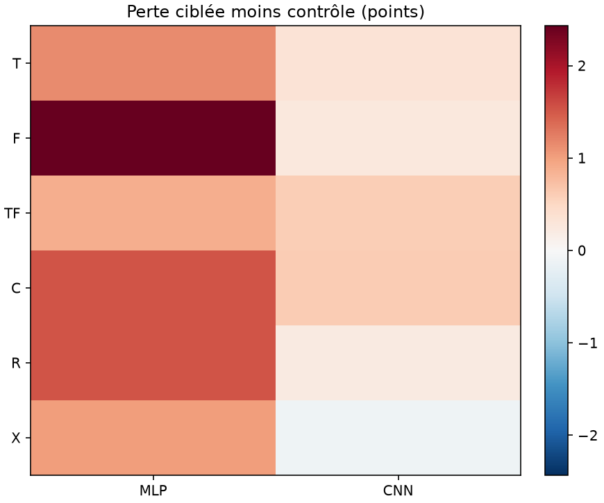
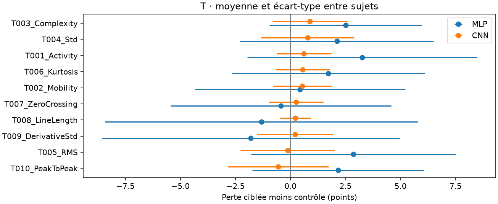
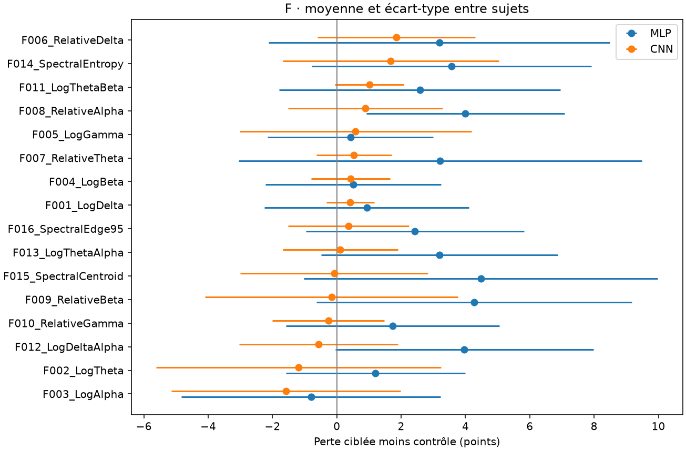
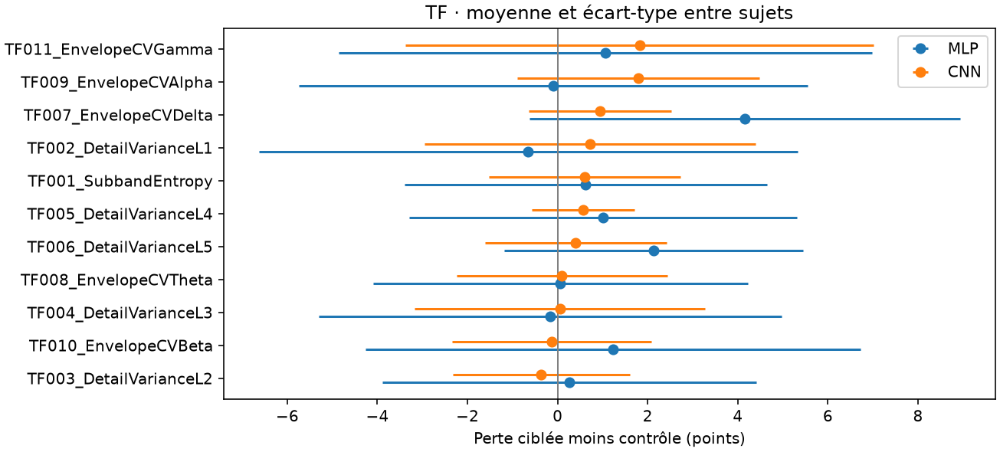
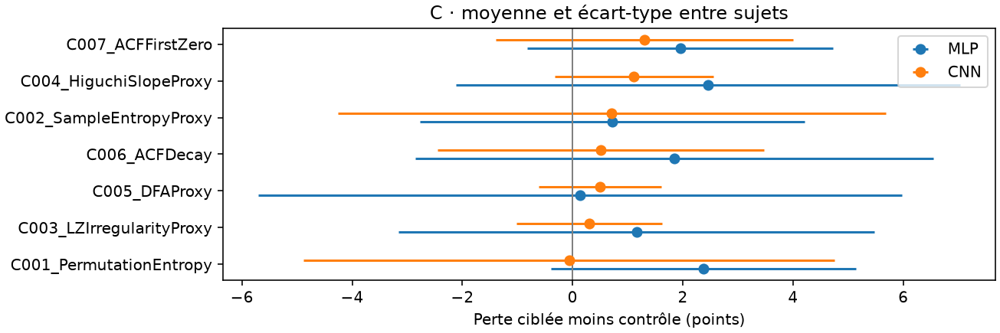
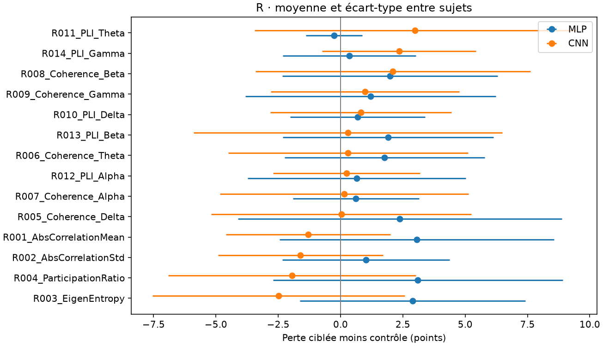
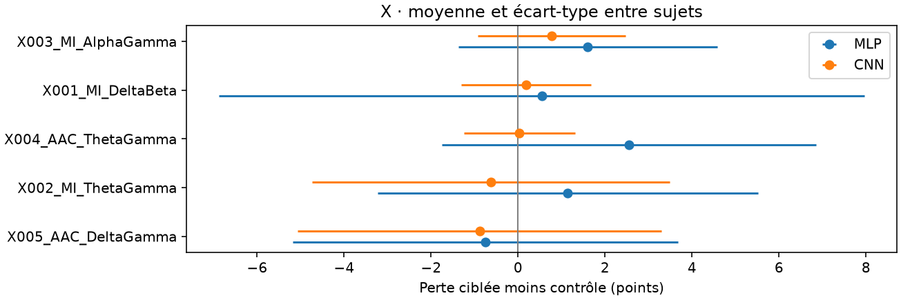

Les pipelines diffèrent par le classifieur et par l’agrégation. Les écarts-types décrivent la variabilité entre sujets. Les essais et les caractéristiques ne sont pas des répétitions indépendantes.
| Subject | MLP_Balanced_Accuracy | MLP_Accuracy | MLP_Macro_F1 | MLP_Log_Loss | CNN_Balanced_Accuracy | CNN_Accuracy | CNN_Macro_F1 | CNN_Log_Loss | CNN_minus_MLP_Balanced_Accuracy | CNN_minus_MLP_Accuracy | CNN_minus_MLP_Macro_F1 | CNN_minus_MLP_Log_Loss |
|---|---|---|---|---|---|---|---|---|---|---|---|---|
| sub-P01 | 0.491 | 0.489 | 0.392 | 1.036 | 0.333 | 0.330 | 0.165 | 1.095 | -0.157 | -0.160 | -0.227 | 0.059 |
| sub-P02 | 0.590 | 0.593 | 0.557 | 0.963 | 0.333 | 0.328 | 0.165 | 1.087 | -0.257 | -0.265 | -0.392 | 0.124 |
| sub-P03 | 0.394 | 0.392 | 0.341 | 1.065 | 0.333 | 0.328 | 0.165 | 1.099 | -0.061 | -0.063 | -0.176 | 0.034 |
| sub-P04 | 0.353 | 0.352 | 0.266 | 1.144 | 0.368 | 0.367 | 0.273 | 1.385 | 0.015 | 0.014 | 0.007 | 0.241 |
| sub-P05 | 0.350 | 0.353 | 0.266 | 1.136 | 0.243 | 0.242 | 0.233 | 1.121 | -0.107 | -0.111 | -0.034 | -0.016 |
| sub-P06 | 0.333 | 0.333 | 0.167 | 1.616 | 0.451 | 0.446 | 0.379 | 1.067 | 0.117 | 0.113 | 0.212 | -0.549 |
| sub-P07 | 0.379 | 0.380 | 0.312 | 1.215 | 0.414 | 0.412 | 0.301 | 1.085 | 0.035 | 0.032 | -0.012 | -0.130 |
| sub-P08 | 0.366 | 0.362 | 0.321 | 1.095 | 0.500 | 0.505 | 0.477 | 1.058 | 0.134 | 0.144 | 0.155 | -0.037 |
| sub-P09 | 0.486 | 0.484 | 0.411 | 1.040 | 0.333 | 0.324 | 0.163 | 1.090 | -0.153 | -0.160 | -0.248 | 0.050 |
| sub-P10 | 0.365 | 0.365 | 0.251 | 1.510 | 0.360 | 0.358 | 0.283 | 1.364 | -0.005 | -0.007 | 0.032 | -0.147 |
| Indicateur | mean | std |
|---|---|---|
| MLP_Balanced_Accuracy | 0.411 | 0.083 |
| MLP_Accuracy | 0.410 | 0.084 |
| MLP_Macro_F1 | 0.329 | 0.107 |
| MLP_Log_Loss | 1.182 | 0.214 |
| CNN_Balanced_Accuracy | 0.367 | 0.072 |
| CNN_Accuracy | 0.364 | 0.074 |
| CNN_Macro_F1 | 0.260 | 0.106 |
| CNN_Log_Loss | 1.145 | 0.122 |
| CNN_minus_MLP_Balanced_Accuracy | -0.044 | 0.126 |
| CNN_minus_MLP_Accuracy | -0.046 | 0.129 |
| CNN_minus_MLP_Macro_F1 | -0.068 | 0.189 |
| CNN_minus_MLP_Log_Loss | -0.037 | 0.213 |
Une perte positive indique une dégradation. L’effet relatif soustrait la perte du contrôle aléatoire. Interpréter avec les diagnostics d’effacement.

| Feature | Family | MLP_Loss_Balanced_Accuracy_mean | CNN_Loss_Balanced_Accuracy_mean | MLP_Gap_Balanced_Accuracy_mean | CNN_Gap_Balanced_Accuracy_mean |
|---|---|---|---|---|---|
| F015_SpectralCentroid | F | 6.686 | 3.162 | 4.475 | -0.085 |
| F009_RelativeBeta | F | 7.027 | 2.175 | 4.275 | -0.162 |
| TF007_EnvelopeCVDelta | TF | 6.867 | 3.360 | 4.160 | 0.942 |
| F008_RelativeAlpha | F | 6.815 | 2.902 | 3.997 | 0.882 |
| F012_LogDeltaAlpha | F | 5.753 | 2.566 | 3.965 | -0.573 |
| F014_SpectralEntropy | F | 6.186 | 4.475 | 3.574 | 1.679 |
| T001_Activity | T | 5.691 | 3.256 | 3.246 | 0.608 |
| F007_RelativeTheta | F | 5.650 | 3.362 | 3.213 | 0.532 |
| F013_LogThetaAlpha | F | 5.746 | 2.766 | 3.192 | 0.109 |
| F006_RelativeDelta | F | 5.392 | 4.657 | 3.187 | 1.851 |
| R004_ParticipationRatio | R | 3.092 | -0.433 | 3.100 | -1.947 |
| R001_AbsCorrelationMean | R | 2.917 | -0.727 | 3.063 | -1.304 |
| R003_EigenEntropy | R | 2.998 | -1.714 | 2.888 | -2.479 |
| T005_RMS | T | 5.601 | 2.658 | 2.846 | -0.135 |
| F011_LogThetaBeta | F | 5.130 | 3.579 | 2.582 | 1.010 |
| Feature | Family | MLP_Loss_Balanced_Accuracy_mean | CNN_Loss_Balanced_Accuracy_mean | MLP_Gap_Balanced_Accuracy_mean | CNN_Gap_Balanced_Accuracy_mean |
|---|---|---|---|---|---|
| R011_PLI_Theta | R | -0.227 | 3.309 | -0.254 | 2.992 |
| R014_PLI_Gamma | R | 0.481 | 2.998 | 0.356 | 2.347 |
| R008_Coherence_Beta | R | 1.934 | 2.897 | 1.983 | 2.101 |
| F006_RelativeDelta | F | 5.392 | 4.657 | 3.187 | 1.851 |
| TF011_EnvelopeCVGamma | TF | 3.416 | 4.767 | 1.064 | 1.821 |
| TF009_EnvelopeCVAlpha | TF | 2.603 | 4.492 | -0.093 | 1.788 |
| F014_SpectralEntropy | F | 6.186 | 4.475 | 3.574 | 1.679 |
| C007_ACFFirstZero | C | 4.230 | 3.926 | 1.951 | 1.306 |
| C004_HiguchiSlopeProxy | C | 4.681 | 3.645 | 2.458 | 1.115 |
| F011_LogThetaBeta | F | 5.130 | 3.579 | 2.582 | 1.010 |
| R009_Coherence_Gamma | R | 1.117 | 1.227 | 1.198 | 0.988 |
| TF007_EnvelopeCVDelta | TF | 6.867 | 3.360 | 4.160 | 0.942 |
| F008_RelativeAlpha | F | 6.815 | 2.902 | 3.997 | 0.882 |
| T003_Complexity | T | 5.088 | 3.306 | 2.504 | 0.876 |
| R010_PLI_Delta | R | 0.869 | 1.072 | 0.684 | 0.822 |





